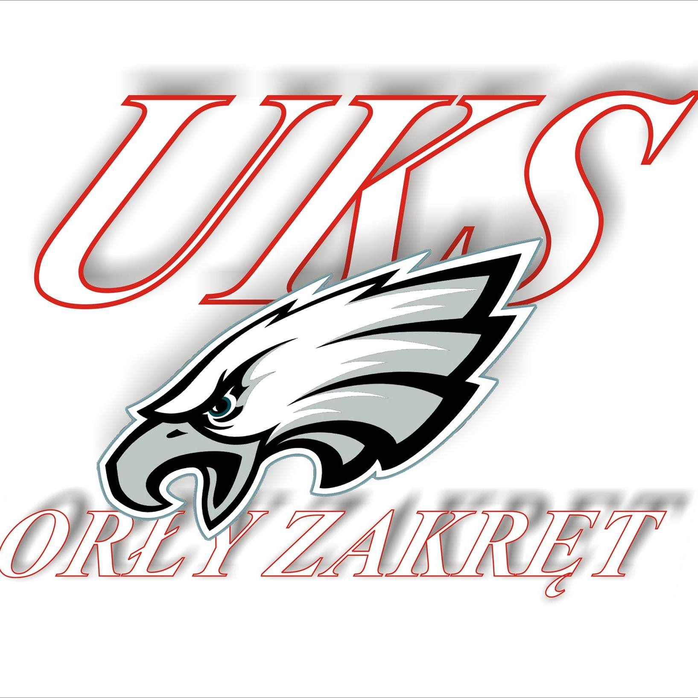

UKS Orły Zakręt

Uczniowski Klub Sportowy Orły Zakręt jest miejscem w którym można poznać Brazylijskie
Jiu Jitsu, ale też zapasy i grappling. Na zajęciach wprowadzane są też ćwiczenia akrobatyczne. Zajęcia odbywają się na hali sportowej przy szkole w Zakręcie (gmina Wiązowna) pod Warszawą.
Jest to klub dla dzieci, młodzieży i dorosłych. Aktualnie zajęcia prowadzone są cztery razy w tygodniu przez trzech trenerów.
W UKS Orły Zakręt trenuję od 6 lat . Razem z trenerami jeżdżę na zawody sportowe o różnej randze, gdzie sprawdzam swoje siły w BJJ.
Poniżej nagranie pokazu BJJ, zapasów i akrobatyki w wykonaniu moim i moich koleżanek i kolegów z klubu podczas Gminnego Dnia Sportu we wrześniu 2021.

⬅UKS Orły Zakręt

⬅Kontakt z głównym trenerem